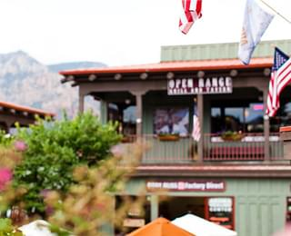
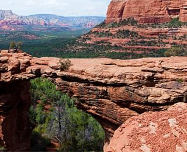

Седона - небольшой городок в Аризоне, заслуживающий большего!
Рассмотрим 5 причин, по которым Седона круче, чем Гранд Каньон!
Настоящий городок
№1
Седона не аттракцион для туристов, там течет своя жизнь
-
Жилье
Рекомендуем пожить в настоящем мотеле, все как в кино!
-
Сувениры
Не только китайского, но и местного производства!
-
Еда
Всегда заказывайте фирменный бургер, вы не разочаруетесь!
Там есть место дьявола
№2
Да, по нему можно пройти! Если Вы осмелитесь, конечно
Небольшая площадь
№3
Все интересные места находятся очень близко
Красивая дорогоа
№4
Ехать в Седону из Лас-Вегаса совсем не скучно!
Мало туристов
№5
Большинство едет в Гранд каньен и толпится там
Заинтересовались?
Укажите предполагаемые даты поездки, и мы покажем Вам лучшие предложения гостиниц в Седоне